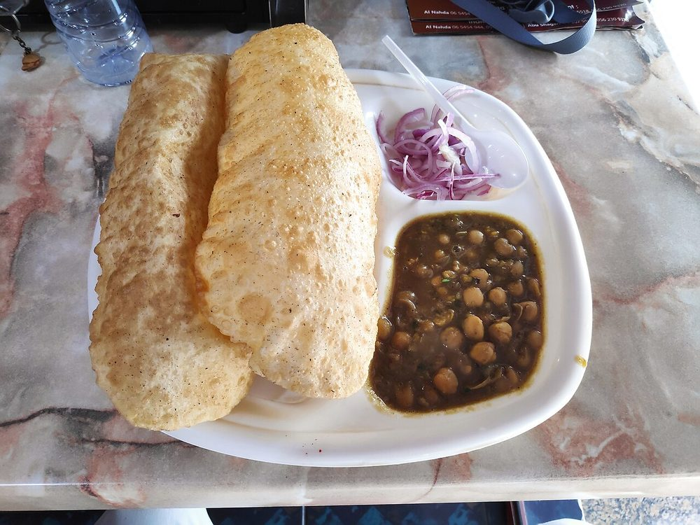

Contains: milk, gluten
Checked against the ingredient list for ten allergens: milk, egg, fish, crustaceans, tree nuts, peanuts, sesame, mustard, soy and gluten. Brands vary, so read the label on anything new to you.
Ingredients
Quantities for 4.
- 250g dried, soaked overnight Chickpeas
- 300g Maidafor the bhature
- 3 tbsp Ravagives the bhatura its crisp edge
- 100g Yogurt
- 2, finely chopped Onion
- 1 small, sliced, to serve Onionseparate from the two that go into the choleoptional
- 300g, pureed Tomato
- 1 tbsp paste Ginger
- 1 tbsp paste Garlic
- 4, whole, to serve Green Chillioptional
- 1 tsp Chaat Masala
- 1 tsp Amchur
- 1.5 tsp Garam Masala
- 2 tsp Coriander Powder
- 1.5 tsp Chilli Powder
- 1/2 tsp Black Saltoptional
- 2 Bay Leafoptional
- 1 Black Cardamomthe smoke behind the colouroptional
- 600ml Neutral Oilfor deep frying
- to taste Salt
Cookware
stovetop, pressure cooker, kadhai
Before you start
- The colour is not from chilli. Traditionally the chickpeas are boiled with a tea bag or amla; here the black cardamom and long bhuna do the work.
- Bhatura dough needs a warm 2-hour rest. Under-rested dough does not puff, it fries flat and hard.
Method
- Make the bhatura dough first: maida, rava, yogurt, a pinch of salt and enough warm water for a soft dough. Knead 10 minutes, cover, rest 2 hours in a warm place.
- Pressure cook the soaked chickpeas with the bay leaf, black cardamom and salt for 6 whistles, until they crush easily between finger and thumb.Undercooked chana never softens later in the masala.
- Fry the onion in 4 tbsp of oil for 12 minutes until dark brown, then add ginger and garlic.
- Add the ground spices and the tomato puree, and cook 12 minutes until the oil separates and the masala darkens.
- Add the chickpeas with a cup of their cooking liquid, crush a spoonful against the side of the pan to thicken, and simmer 15 minutes.Crushing a few is what gives the gravy body without any flour.
- Finish with amchur, chaat masala, black salt and garam masala.
- Roll the rested dough into ovals 4mm thick and slide into oil at 190C. Press gently with a slotted spoon and it will balloon; turn once and lift when pale gold.The oil must be properly hot. Cool oil gives a heavy, greasy bread.
- Serve immediately with sliced onion and a green chilli.
Storage
The chole keep 3 days refrigerated and are better the next day. Bhature must be eaten within minutes of frying; the dough keeps 24 hours refrigerated.
Nutrition Good estimate
High protein: 25 g a serving, 12% of the calories
| Per serving359 g | Per 100 g | |
|---|---|---|
| Calories | 814 kcal | 227 kcal |
| Protein | 25.1 g | 7 g |
| Carbohydrate | 120.6 g | 34 g |
| of which sugars | 14.4 g | 4 g |
| Fibre | 13.7 g | 4 g |
| Fat | 26.9 g | 8 g |
| of which saturated | 3.3 g | 1 g |
| of which unsaturated | 21.4 g | 6 g |
Ingredients given to taste count as zero, so the real figures run a little higher. Nearest database match used for amchur, black salt, chaat masala, garam masala. Estimated from raw ingredients using USDA FoodData Central.
Times, yields, allergens and nutrition are guidance. Use your own judgement on doneness and on storing. More in About.